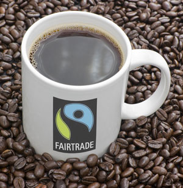

Fair Trade Coffee

Fair trade certified coffee directly supports a better life for farming families in the developing world through fair prices, community development and environmental stewardship.
Fair trade coffee farmers market their own harvests through direct, long-term contracts with international buyers, learning how to manage their businesses and compete in the global marketplace.
Receiving a fair price for their harvest allows these farmers to invest in their families' health care and education, reinvest in quality and protect the environment.